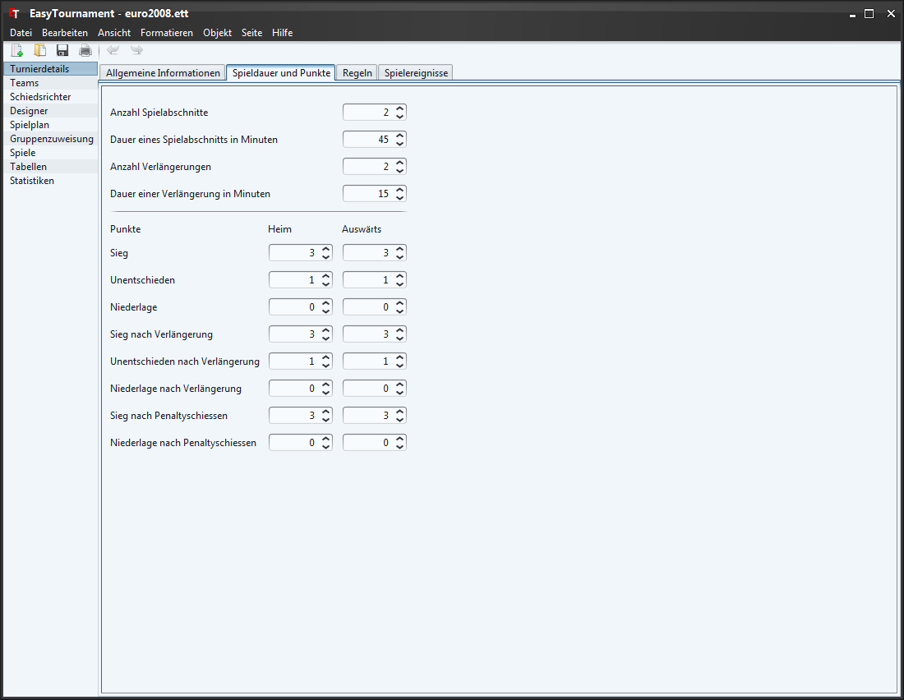

Die Anzahl Spielabschnitte, welche ein Spiel in ihrem Turnier hat (z.B. 2 für zwei Halbzeiten im Fussball oder 3 für 3 Drittel im Eishockey).
Kann es in einen Spiel zu einer Verlängerung kommen? Falls ja, dann erfassen sie hier die Anzahl maximal möglicher Verlängerungen (z.B. 2 für zwei Verlängerungs-Halbzeiten a 15 min im Fussball oder 1 für die Verlängerung im Eishockey).
In diesen Feldern legen sie fest, wieviele Punkte ein Sieg, ein Unentschieden oder eine Niederlage einbringt.